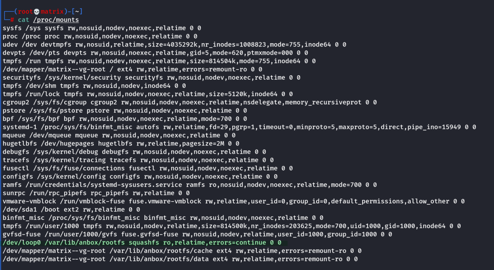

anbox & adb
HTB: RouterSpace Reference
Anbox & ADB
We need VPN access over the anroid instance. So its better we go in Anbox and install it in Kali Linux
How to install
https://chennylmf.medium.com/how-to-install-anbox-on-kali-linux-2022-1-40d40cb77d9d
1) apt install anbox
2) Download latest image from https://build.anbox.io/android-images/
3) Important - Rename the file android_amd64.img to android.img and place it inside /var/lib/anbox directory
4) Start the service (As Root)
service anbox-container-manager start
5) Open Anbox from Desktop Applications or Preferably use command line is a NON-Root user.
anbox launch --package=org.anbox.appmgr --component=org.anbox.appmgr.AppViewActivity


Stopping Anbox
1) Close the GUI Application
2) service anbox-container-manager stop
Installing Applications & Anbox using ADB
1) Android Debug Bridge [Always to be used by NON-Root User (Read Description Below at heading Research)]
apt install adb
2) adb install app_name.apk
To uninstall Application
Go to settings ----→ Apps -----→ Uninstall
Same as a phone
To uninstall Anbox
1) Delete the image file from /var/lib/anbox
2) apt remove anbox
After Configuring the Anbox, we installed Routerspace.apk and run it.
We opned the RouterSpace icon and click on next.

Click on Check Status to get the result from server.

We got an error “Unable to connect to the server !”
Research
I installed Anbox without using snap(Shown above). Most important part is to run adb and anbox both as Non-Root user and only start the anbox-container-manager as root
Problem(Error Explanation)
I opned the WebView app of anbox (Its a browser). I could connect to www.google.com as well as i could connect to http://10.10.11.148
From here I confirm that internet connection and vpn connection are both working fine insde the container environment.
After certain brainstorming I found that the RouerSpace.apk app must be connecting to http://routerspace.htb (This was confirmed later by Burpsuite. [Check Solution Part])
The reason the app might not be able to connect is there is no entry about the host in the /etc/hosts file of the anbox container
Solution
Method - 1 (Needs Rooted Android Image)
Note: Even if you do not have Rooted Android Image, just reading this method once will give you basic understanding of use of adb to mange the anbox container. Also you will get the idea of how to procure the images.
I figure if i add the following to /etc/hosts file of the anbox container. The app could connect to the required website (http://routerspace.htb).
10.10.11.148 http://routerspace.htb
First check if device is accessible to adb. Start Anbox Application Manager and use the following command.
adb devices -l

Our device is showing here, means we can use adb to interact with it.
Caution: I used adb with root and it caused a lot of issue. The program can't run as root so even if we connect to the container as root we could only be non privileged user.
I then ran adb as non privileged user. To get shell use the following.
Any try to escalate privilege to root is not possible from within the shell.
Then i found the following adb command. (This is the place where if adb is run as root will not work)
adb root

Now, I try to edit the /etc/hosts file. location is /system/etc/hosts

It tells an user called u1_root has write access. I tried to write to the file. (Note: vi, vim, nano are not present)
echo “10.10.11.148 routerspace.htb” >> /system/etc/hosts

OR
I use adb to pull files, edit it and then push back the files.
Copy /system/etc/hosts to current directory
adb pull /system/etc/hosts .
Edit the file with nano/vim and add “10.10.11.148 routerspace.htb” to it
vim hosts
Copy the edited local file into the anbox container filesystem.
adb push hosts /system/etc/hosts
As we can see we in both ways we cannot write to it.
I found another intresting point: Read-only file system
I looked at the /proc/mounts we see that the image is loaded as ro → Read Only

Check the one highlighted
So I tried to remount the filesystem as Read-write, but it also failed

It says its write-protected
Anbox Android images from (https://build.anbox.io/android-images/) are write protected.
Thus I cannot make any changes in the filesystem.
I also researched that we need a rooted android image file to be able to make changes. However, anbox doesn't provide them.
Its not readily available to download as an image file as of now.
Note: Arch Linux for anbox community has a dedicated page in its AUR(Arch User Repository) for rooted android image. however, the resource/webpage doen not provide any .img file download. It is about how to build an image using PKGBUILD script.
For Further Research Search : "Arch Linux Rooted Android Image"
https://aur.archlinux.org/packages/anbox-image-gapps-rooted
Method - 2 (Using a proxy server in the local machine)
If We cannot edit the hosts file. We can route the container http traffic through a proxy server and use the hosts file of the proxy server to have the entry in it.
I can use Burpsuite and set up the proxy server. All the http traffic going from/to anbox container will go through burpsuite proxy and as burpsuite is running on the local machine. The /etc/hosts files of the local machine will be checked for domain names.
Thus my local kali machine's host file should have the entry.
I make the settings in the adb for the anbox container to use the proxy.
adb shell settings put global http_proxy 10.10.16.28:9090
Note: To remove proxy use the following command.
adb shell settings put global http_proxy :0
I am using the VPN IP as our proxy server IP. Iwill point this to burpsuite proxy listeners
Next, I make the settings in burpsuite
Open Proxy ---→ options

I need to add my previously set VPN IP here for burpsuite to listen to connection.

Now, its reflecting in the listeners.
For the time being lets keep intercept to off and try to run our app.
As it is going through the proxy server at VPN IP and therefore is able to connect to http://routerspace.htb